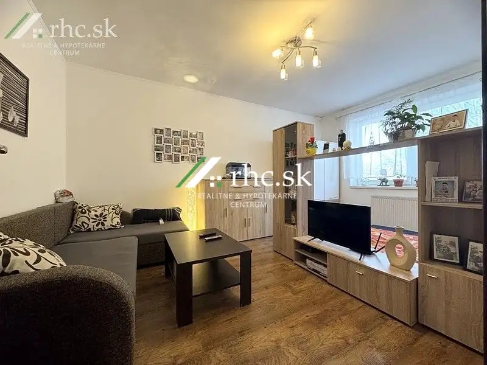
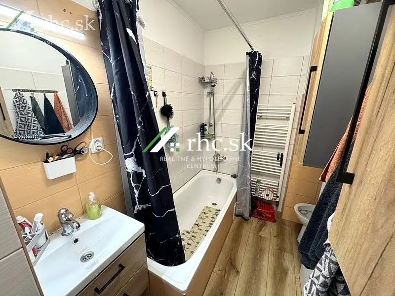
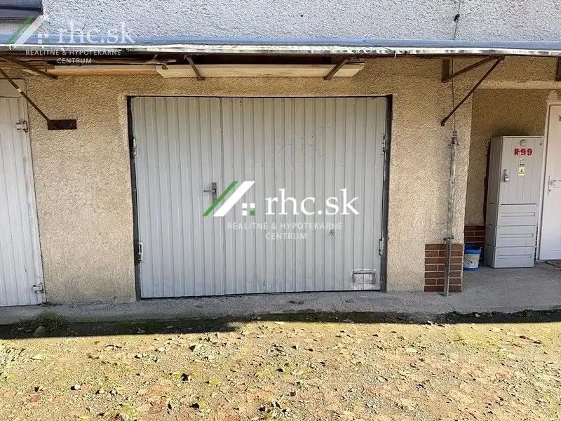

2-izb.byt s garážou a vlastným kúrením - Samuela Jurkoviča, Stropkov
Stropkov




- Dispozícia2-izbový
- Plocha52 m²
- Poschodie1. z 2
- StavČiastočná rekonštrukcia
O nehnuteľnosti
Hľadáte priestor, ktorý si upravíte podľa seba, a zároveň oceníte garáž aj samostatné kúrenie?Dvojizbový byt na ulici Samuela Jurkoviča v Stropkove ponúka príjemných 52 m² a praktickú dispozíciu, ktorá vyhovuje jednotlivcom aj párom. Byt je v pôvodnom stave, takže novému majiteľovi umožňuje upraviť si ho podľa vlastných predstáv. Už pri vstupe do bytu vás privíta chodba, ktorá pôsobí prehľadne a útulne. Je tu miesto na komodu aj vešiakovú stenu a zároveň tu nájdete vlastný kotol, ktorý prináša nízke mesačné náklady a úplnú kontrolu nad teplom v byte. Hneď z chodby sa vstupuje do kúpeľne s vaňou a WC. Pokojne a súkromne pôsobí aj ďalšia izba, ktorá môže slúžiť ako detská izba, spálňa alebo pracovňa podľa toho, čo potrebujete. Srdcom bytu je kuchyňa, ktorá vytvára domácu atmosféru s dostatkom miesta na varenie aj spoločné stolovanie. Obývačka ponúka miesto na oddych a návštevy, ale zároveň vytvára kútik vhodný na spanie. Všetky miestnosti sú orientované na západnú stranu, takže byt je teplý a slnečný počas celého popoludnia. Veľkou výhodou je aj garáž priamo pod bytom, ktorá prináša pohodlie a praktické riešenie pre každodenné parkovanie. Okrem toho je lokalita mimoriadne praktická, hneď pred bytovým domom sa buduje veľké obchodné centrum, takže všetko potrebné budete mať na dosah ruky. Ak Vás táto nehnuteľnosť zaujala kontaktujte ma, a dohodneme si obhliadku.VÝHODY:• Vlastné kúrenie• Garáž priamo pod bytom• Orientácia na západ• Praktická dispozícia• Rekonštrukcia podľa vl. predstáv• Skvelá lokalita a dostupnosť služiebCelková plocha: 52 m²Poschodie: 1/2Vybavenosť: plastové oknáMožnosť hypotekárneho úveru: 233 €/mes. (výška mesačnej splátky je informatívna pri poskytnutí hypotekárneho úveru na 30 rokov)Kontakt: Lenka FlešárováEmail: flesarova@rhc.skTel.: 0905 106 019Nehnuteľnosť ID: LF0514
Parametre
- Cena vrátane energií
- Nie
- Druh
- 2 izbový byt
- Dátum zverejnenia
- 05. 03. 2026
- Energetický certifikát budovy
- nie je
- Orientácia
- Západná
- Podlažie
- 1
- Počet nadzemných podlaží
- 2
- Rok výstavby
- 1985
- Stav nehnuteľnosti
- Čiastočná rekonštrukcia
- Typ
- Predaj
- Typ konštrukcie
- Tehlová
- Vybavenie
- Pivnica, Garáž
- Úžitková plocha
- 52 m²